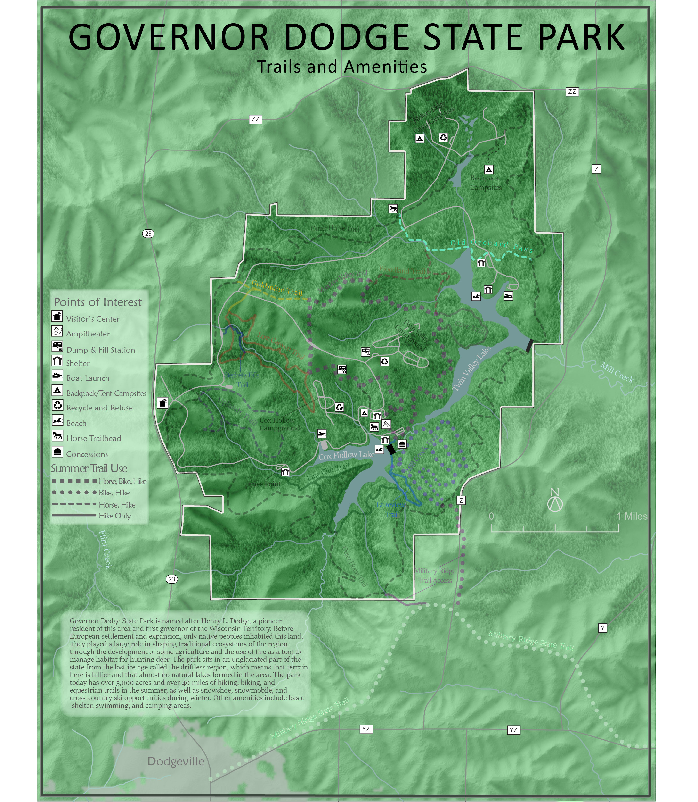

This is my final project for an advanced cartographic design class where I expanded upon our terrain representation done in Arcmap by rendering the landscape in a 3d graphics program instead. I wanted to create a map of one of my favorite State Parks and its trails, and I ended up hiking all of the trails on this map with a GPS to try and get the data. I successfully hiked 18 miles in one day, but before I planned on going back to finish the remaining 10 or so miles, a DNR GIS analyst sent me a georeferenced shapefile of all of the trails. My efforts had been in vain, but it was a great day and a needed distraction from long hours working in Illustrator and photoshop. Everyone should visit and support Governor Dodge State Park!
Terrain was made in Blender 3d software from 10m DEM provided by the Wisconsin DNR. Shapefiles for the streams, lakes, and roads all accessed from the Wisconsin DNR GIS repository as well. Landcover data was provided by the Wiscland 2 project through the Wisconsin State Cartographer’s office and UW Madison. Forest texture created from an aerial image taken by Pete Mcbride
